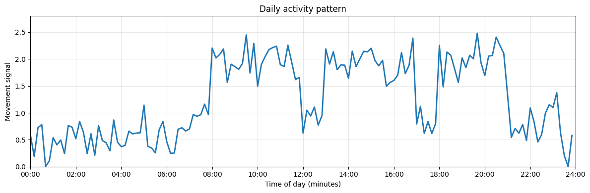
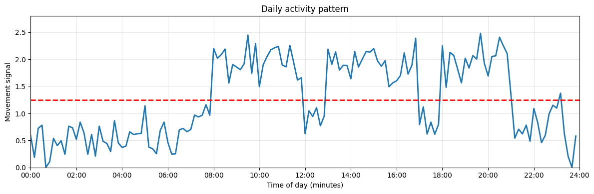
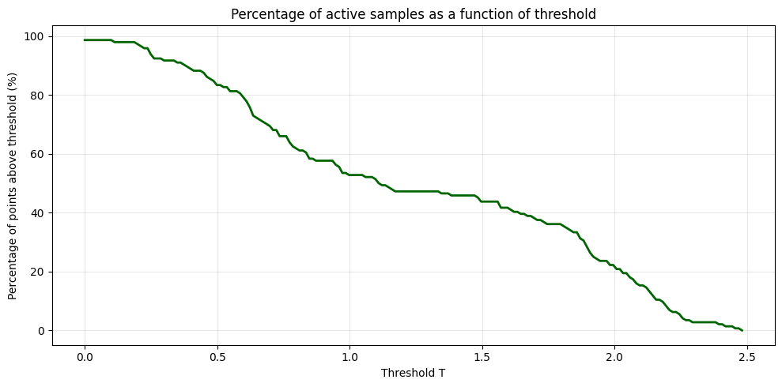

Biomedical Engineering Skills 3
Engineering data and image analysis in the AI age
massimo.vassalli@glasgow.ac.uk
Components of the course
To acquire new skills (tools), useful in the everyday life of a biomedical engineer
- Python for Engineers Massimo Vassalli
- Presenting scientific data Marco Cantini
- Communication and presentation of ideas in an engineering environment Marco Cantini
- Intellectual property management and ideas patenting Guests
Assessment
This course develops over both S1 and S2, assignments are spread across the year, organised as coursework, reports and a group assignment.
- Semester 1
- Programming Language worksheets [individual, 25%]
- Programming project [individual, 30%]
- Semester 2
- Data analysis and figure preparation [individual, 30%]
- Presentation delivery [group, 15%]
10 credits course
Calendar S1
Lectures are every Friday 9–10 from Week 1 to Week 7 (included), in the IT labs.
Tutorials follow on the same day, from 13 to 14, in the IT labs. They are structured activities, run with the demonstrators, where you apply what the lecture introduced to new data.
Additional readings, formative videos and direct manual references are available on Moodle for each lecture.
Biomedical engineers answer questions
As biomedical engineers, we are rarely interested in writing code for its own sake. Instead, we are asked questions such as:
- How many cells are present in this image?
- Does a treatment alter cell morphology?
- Is this biomaterial more porous than another?
- Can a signal be used to classify a disease?
- Which patients belong to a specific group?
Note
Computers do not answer questions directly. They execute procedures that we design.
From questions to computation
Example question:
How many cells are present in this microscopy image?
A computer cannot answer this question directly.
Before any code is written, we need to translate the question into an executable procedure applying methods of computational engineering (computational thinking).
A framework for computational engineering: D/D/SD/V
DEFINE
↓
DECOMPOSE
↓
SPECIFY ⇄ DIAGNOSE
↓
VALIDATE
This framework is a simple, structured approach to designing and implementing computational pipelines. It is based on the principles of software engineering and scientific thinking, and it helps ensure that the resulting code is correct, robust, and fit for purpose.
Note
Today we look at the whole framework. In the following weeks we will go through it one piece at a time, on problems of increasing complexity.
D - Define
➤ DEFINE
↓
DECOMPOSE
↓
SPECIFY ⇄ DIAGNOSE
↓
VALIDATE
What problem are we trying to solve?
- Define the scientific question
- Define what counts as an answer: which output, in which units
- Define success criteria and acceptable performance
- Define the data: what we have, and what could tell us whether the answer is right
Tip
A question that is not well defined cannot be answered by any code, however good.
D/D - Decompose
DEFINE
↓
➤ DECOMPOSE
↓
SPECIFY ⇄ DIAGNOSE
↓
VALIDATE
What steps are required?
- Break the workflow into steps
- For each step, define what goes in and what comes out (meaning, units, format)
- For each step, define when we consider it working
- Record units and metadata
Tip
The interfaces between steps are where most pipelines break: a step receives something different from what it expects.
D/D/SD - Specify ⇄ Diagnose, the engineering loop
DEFINE
↓
DECOMPOSE
↓
➤ SPECIFY ⇄ DIAGNOSE
↓
VALIDATE
SPECIFY
- Purpose of the step, rule, assumptions
- Constraints, limit cases, invariants
build (delegated)
- Human or AI generates the implementation
DIAGNOSE: confront the step with evidence
- data with a known answer (built on purpose)
- domain checks (e.g. count by hand on a small sample)
- direct inspection of what happens inside the step
When they disagree, is the failure due to:
- specification, interface?
- data, environment?
- implementation?
D/D/SD/V - Validate
DEFINE
↓
DECOMPOSE
↓
SPECIFY ⇄ DIAGNOSE
↓
➤ VALIDATE
Did we solve the right problem?
- Run the whole pipeline, not one step
- Possibly on data not used while building it
- Compare against ground truth or independent measurements
- Check robustness to parameters
- Check the biological interpretation
Diagnose or validate?
Both confront the code with evidence, but they answer different questions.
| Diagnose | Validate | |
|---|---|---|
| Scope | one step | the whole pipeline |
| Data | data you have looked at | data you have not looked at |
| Question | did we build it right? | did we build the right thing? |
| When it fails, go back to | Specify, or Build | Define, or Decompose |
Note
In medical device software this distinction is formal: verification and validation are both required, and both must be documented. We will come back to this at the end of the lecture.
D/D/SD/V
DEFINE
↓
DECOMPOSE
↓
SPECIFY ⇄ DIAGNOSE
↓
VALIDATE
Important
Specification is the primary artefact.
AI may write the code. Humans own the definition of correctness.
Example: /wearables
The question
A person is equipped with a wearable accelerometer that records movement for a day, integrated over the last 10 minutes. Develop a procedure that analyses the data and shows the percentage of the day the person was active.

DEFINE /wearables
Develop a procedure that analyses the data and shows the percentage of the day the person was active.
Is the problem fully defined?
- What is “active”?
- Is there a threshold?
- Is activity binary or continuous?
- Are short bursts important?
- Does walking differ from running?
DECOMPOSE /wearables
identify the implementation steps to achieve the goal previously DEFINEd.
- Load the data
- Classify each sample as active or inactive
- Summarise: count the active samples and compute the percentage
Note
For data and image analysis tasks, decomposition typically takes the form of a pipeline of steps. It is often convenient to encapsulate each step in a function with clearly defined and consistent IN - OUT interfaces.
Tip
Displaying the result is not a step of the analysis: it is how we look at it, to diagnose and to validate.
SPECIFY ⇄ build ⇄ DIAGNOSE /wearables
Specify, implement and test each step of the decomposition
Purpose: Distinguish active from inactive periods.

Rule:
If movement > T ⇒ Active Else ⇒ Inactive
Assumption:
Movement magnitude is a proxy for activity.
Input:
- an array of Movement values as a function of time, sampled every 10 minutes for a day (144 samples)
- a threshold T (e.g. 0.5)
Output:
- an array of Active/Inactive labels (binary) for each sample
SPECIFY ⇄ build ⇄ DIAGNOSE /wearables
Implement the code from the specification.
Build
“Write a Python function that takes an array of movement values and a threshold T, and returns an array of binary labels indicating whether each sample is Active (signal > T) or Inactive (signal < T).”
Compare the prompt with the rule on the previous slide. What happens when the movement is exactly equal to T?
The specification was complete (“else ⇒ inactive”). The prompt, rewritten by hand, lost a case, and the AI had to guess.
Important
The AI only knows what you give it. We will give it the specification itself, not a paraphrase of it.
SPECIFY ⇄ build ⇄ DIAGNOSE /wearables
Confront the step with evidence, in a range of scenarios, including limit cases.
- Known answer: a short array built on purpose, where we know how many samples are active
- Domain check: count by hand the active samples in one hour of real data
- Inspection: plot the signal, the threshold and the labels together
- Does the code run without errors?
- Does it return one label per sample?
- All values below T? All above? Exactly equal to T? Negative values?
Note
Part of this can be automated with unit tests: small pieces of code that check whether a function behaves as expected on predefined inputs.
VALIDATE /wearables
- Does 93.75% of the day being active make sense for a person who is mostly sedentary?
- Does the result match the ground truth or independent measurements if available?
- Does the result align with biological interpretation and domain knowledge?
- Is the result robust to variations in the threshold T or other parameters?

Important
The code may be perfectly correct and the answer still wrong. Here the problem is the definition of “active”: validation sends us back to DEFINE.
From one step to a pipeline
We have followed a single computational step. In real data and image analysis projects, several steps are connected together to form a pipeline, and each letter of the framework leaves a written trace.
| What you will produce | |
|---|---|
| Define, Decompose | a project description: question, steps, interfaces |
| Specify ⇄ Diagnose | for each step: a specification, the code, the tests, and a record of the diagnosis |
| Validate | the whole pipeline on new data, and a short report |
Note
We start next week, with a single step.
Large Language Models
Python is a programming language, and so it lends itself very well to being written and processed by LLMs. Programming skills are found in almost every LLM currently available.
There are both generic LLMs (e.g. ChatGPT, Gemini, Claude) and programming specific tools (e.g. GitHub Copilot). Generic LLMs are normally accessed through a web interface, while programming tools are integrated in code editors. Modern ones offer agents that can directly work on a project with you.
AI Coding Stats 2026
Aggregated data from Stack Overflow, JetBrains, DORA, DX, GitClear, Veracode, GitHub Octoverse, Apiiro, and McKinsey.

AI-supported programming is becoming the norm
- AI-generated code is increasingly used in industry, and some organisations make AI use mandatory
- The trend is not “AI replacing programmers”, but “programmers using AI as a productivity tool”
Main messages from the surveys:
- The speed advantage: developers using AI completion tools finish tasks roughly 55% faster.
- The trust paradox: adoption is nearly universal, but trust in AI accuracy dropped to 29%. AI is the norm for drafting code; human oversight and debugging are still heavily required.
Validation is the real currency
- When code generation is faster, the bottleneck shifts from writing code to checking it
- The key question is no longer “did the model generate code?” but “does the code work, and is it right?”
- In engineering, incorrect code means wrong results or unsafe systems
- Technical checks: tests, debugging, limit cases — Diagnose
- Scientific checks: does the solution address the real problem? — Validate
A story from the trenches
AI Is Already Better at Coding Than Most Software Developers - DEV Community
Five Minutes of Coding. Four Days of Engineering.
Recently, I had to introduce a change to an application that would probably take a coding agent — even a not particularly brilliant one — about five minutes to implement.
So what was the problem? Discussing WHAT that change should actually look like, coordinating it with all the teams involved, and agreeing on the final solution with the client took FOUR DAYS. During those four days, the decisions changed several times.
The implementation took five minutes. Figuring out what should be implemented took four days. And that is exactly the difference between coding and software engineering.
And let me add something important here: having a developer in those meetings, and preferably an experienced one, was absolutely necessary.
Responsibility and AI in this course
Important
In this course, AI use is allowed and expected. You remain responsible for everything you submit, in agreement with the University policy.
- We do not assess who wrote the code: you, the AI, or a library
- We assess the evidence that it does the right thing. For every assignment you submit your project artefacts:
- the project description, including which AI tools you used
- the diagnosis of each step: tests, checks, and what went wrong
- the validation of the whole pipeline on new data
- Some parts can only come from you: expected values worked out by hand, the diagnosis of what went wrong, and the judgement on whether the result makes sense
- If you cannot explain why your pipeline is right, it is not right yet, however it was written
Note
This is how regulated medical software works: code becomes trustworthy through evidence, not authorship.
From SOUP to Controlled Software: Establishing Provenance for AI-Generated Code
SOUP (Software of Unknown Provenance) is not primarily about code quality. It is about missing evidence.
Under IEC 62304, software may be considered SOUP when it was not developed within the manufacturer’s quality system or when adequate development records are unavailable. The challenge is therefore to demonstrate:
- What requirements the software was intended to satisfy
- What assumptions and constraints applied
- How the software design was derived from the requirements
- How correctness was verified and validated
- What risks were identified and mitigated
AI-Generated Code: SOUP by Default?
AI-generated code often arrives without documented requirements, design rationale, traceability to specifications, development history, and verification evidence.
As a result, it may initially resemble SOUP.
To bring AI-generated code under engineering control:
- Define and document requirements before implementation
- Perform human review and design inspection
- Establish requirement-to-code traceability
- Create unit, integration, and system tests
- Document known limitations and hazards
- Store evidence within the project quality system
Important
Software becomes less “unknown” not because we know who wrote it, but because we can demonstrate what it was supposed to do, why it was implemented that way, and how we verified that it actually does it.
ENG3090 course overview
| Week | Framework focus | Problem and data |
|---|---|---|
| 1 | The whole framework; your environment | wearables: a 1D signal |
| 2 | Specify ⇄ Diagnose on a single step | wearables activity; ECG classification |
| 3 | Decompose: pipelines and interfaces; first validation | a noisy signal: from filtering to rate |
| 4 | Images are arrays: representation and filtering | multichannel microscopy |
| 5 | From image to mask | thresholds, background, morphology |
| 6 | From mask to numbers | labelling, measuring and classifying objects |
| 7 | Validate and deliver a pipeline | final project |
Note
Worksheets in weeks 2–6 (25%); the programming project starts in week 7 (30%).
Your environment
The environment is everything your code depends on, besides the code itself:
- the interpreter (which Python, which version)
- the packages installed for it
- the folder you are running from
- the editor you use to write and run
Caution
Code that works on one computer and not on another almost always has an environment problem, not a code problem.
Visual Studio Code
- VS Code is a free code editor developed by Microsoft, widely used in education and industry.
- It supports extensions; the most important for this course is the official Python extension (syntax highlighting, completion, running and debugging code), together with the Jupyter extension for notebooks.
- Always open a folder (File → Open Folder), not a single file: the folder is your project.
Caution
Open VS Code and create a folder eng3090/week1
Virtual environments
- Each project gets its own isolated Python environment
- Packages installed for one project do not interfere with another
- The environment can be recreated on another computer
- Windows (PowerShell):
.\.venv\Scripts\Activate.ps1 - Windows (cmd):
.venv\Scripts\activate.bat - macOS/Linux:
source .venv/bin/activate
Then tell VS Code to use it: Ctrl+Shift+P → Python: Select Interpreter → choose .venv.
Installing the packages we need
Why python -m pip rather than just pip? It guarantees that the packages go into the same Python that will run your code. If they do not, you get the classic “I installed it, but Python can’t find it”.
Note
ipykernel lets VS Code run notebooks with this environment. Choosing a notebook kernel is the same question as choosing the interpreter: which Python is running my code?
Diagnosing environment failures
| What you see | What it usually means |
|---|---|
'python' is not recognized as... |
the interpreter is not on the system PATH |
running scripts is disabled on this system |
PowerShell blocks the activation script: use activate.bat from cmd, or let VS Code activate it |
ModuleNotFoundError: No module named 'numpy' |
the package is not installed in the interpreter you are using |
| it works in the terminal but not with ▶ (or vice versa) | the terminal and VS Code use different interpreters |
FileNotFoundError for a file that exists |
you are running from a different folder |
Ask the environment, don’t guess
Before changing anything, collect evidence:
Tip
This is diagnosis: find the cause before applying a fix. Reinstalling everything at random is not diagnosis.
GitHub Copilot in VS Code
- GitHub Copilot is an AI coding assistant integrated into VS Code
- It can suggest code, explain errors and generate programs
- In VS Code:
- open the Extensions view and install GitHub Copilot / GitHub Copilot Chat
- sign in with your GitHub account (apply for GitHub Education for free access)
- open the Chat panel and ask for help with a small task
Note
Next week you will add a course rules file to your project: standing instructions that Copilot reads every time it works on it.
Tutorial
- Finish the setup: VS Code, Python and Jupyter extensions,
.venv, packages, Copilot - Environment bug hunt: run
check_env.py(on Moodle). Does it run? If not, which failure from the table is it? Fix it and write down what you did - Notebooks and your own code: run a notebook with your
.venvkernel, call functions from a.pyfile, and see what happens when you change that file - Organise your workspace for the course
- Markdown in 5 minutes: you will write your specifications in Markdown from next week
Notebooks and your own code
In this course, the logic lives in .py files, where it can be specified and tested. A notebook calls that code step by step, and keeps the results in memory so that we can look at them.
Without the first two lines, a notebook imports your file once: after you fix the code, it keeps running the old version. “I fixed it and nothing changed” is an environment failure.
Tip
When in doubt, restart the kernel and run all the cells from the top.
Markdown basics
Markdown is a lightweight way to write structured documents in plain text.
- Headings with
#,##,### - Bulleted and numbered lists with
-or1. - Emphasis with
**bold**and*italic* - Code blocks and links
- Math
$ math $
Previewing Markdown in VS Code
You can preview Markdown directly in VS Code while writing.
- Built-in preview:
Ctrl+Shift+VorOpen Preview - Useful extensions:
Markdown Preview Enhanced,Markdown All in One
Take-home message
- Computational engineering starts with defining the problem, not with writing code
- The D/D/SD/V framework transforms scientific questions into computational solutions
- Diagnose checks a step on data you know; Validate checks the pipeline on data you have not seen
- AI has dramatically reduced the cost of implementation: specification, diagnosis and validation become more important
- The engineer remains responsible for defining correctness and judging whether a solution is scientifically valid
Next week: Specify ⇄ Diagnose on a single step — how do we know that a step works?

ENG3090 Biomedical Engineering Skills 3